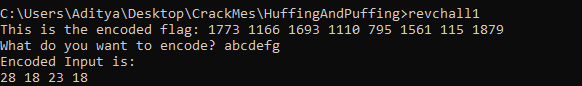
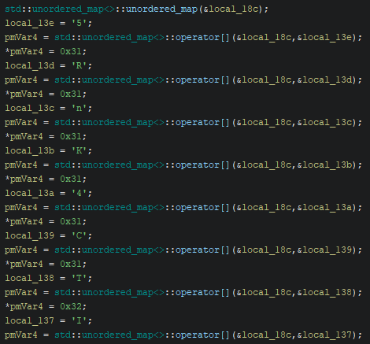
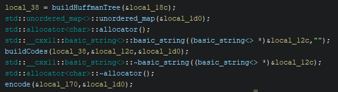
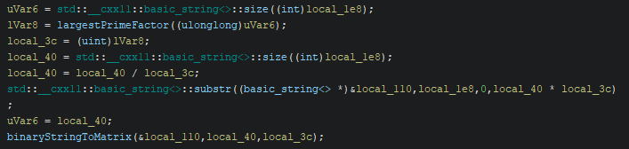
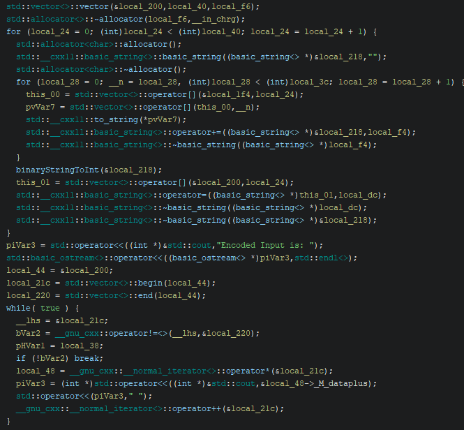
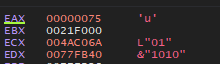
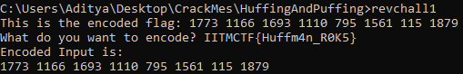

Introduction
When we run this program, it shows us the encoded flag, we pass the a string into the encoder, and get our input but encoded. The goal of this challenge seems to be to get the encoded flag and the encoded input to match by passing the original flag into the program.

So let's open up Ghidra and figure out how this works!
Code Structure
We should get dropped into main. And if we look past the code where the input is captured, we can see that the code;
- Makes a giant dictionary,
- Encodes the input with a Huffman tree,
- Converts the encoded input into a rectangular binary matrix with width equal to the largest prime factor of the encoded string (filling it column by column),
- And finally, prints each column of the matrix as an integer.




Huffman Tree
The crux of this challenge is the Huffman tree, you can read more about it here.
The gist of it that the Huffman tree creates binary codes that replace each character in a string based on frequency.
And from the function header of the buildHuffmanTree function, we know that the giant dictionary is actually the frequency map for the tree
'5' -> 0x31 | 'R' -> 0x31 | 'n' -> 0x31
'K' -> 0x31 | '4' -> 0x31 | 'C' -> 0x31
'T' -> 0x32 | 'I' -> 0x32 | '0' -> 0x31
'u' -> 0x31 | 'F' -> 0x31 | 'M' -> 0x31
'{' -> 0x31 | '_' -> 0x31 | 'H' -> 0x31
'}' -> 0x31 | 'f' -> 0x32 | 'm' -> 0x31
Converting the values from ASCII gives us the counts (e.g., 0x31 = 1). The character set is: 5RnK4CTTII0uFM{_H}ffm
Flag Decoding
We extracted the codes by placing a breakpoint at 0x00401636 and reading the EDX register:

Reverting the encoded flag 1773 1166 1693 1110 795 1561 115 1879 back to binary and mapping it to our Huffman table results in:
IITMCTF{Huffm4n_R0K5}

They match!